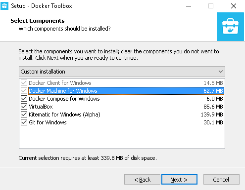
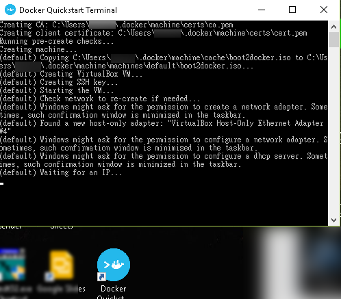
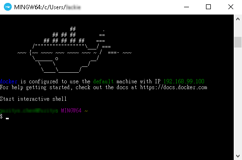
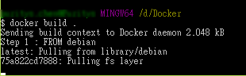
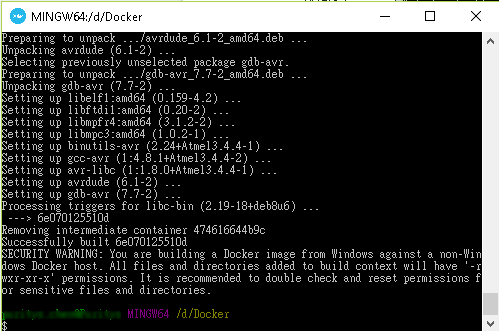
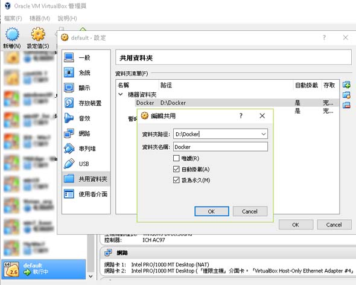
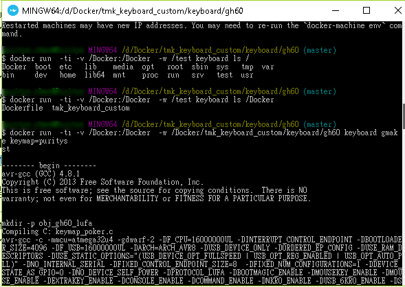
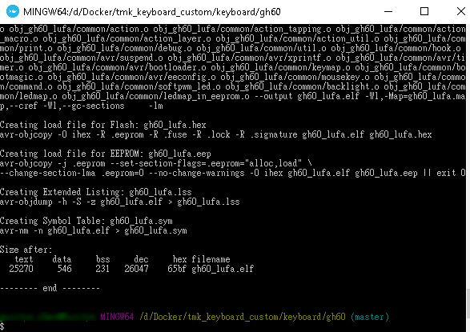

這篇文章會介紹如何編譯 GH60 鍵位程式，至於如何刷鍵位可以參考我的上一篇文章 。
編譯鍵位程式：是指自已修改鍵盤每個按鍵設定後，再編譯成鍵位檔 Hex 格式，這個檔案可以用來更新鍵盤韌體，達到自訂熱鍵的功能，這個動作英文叫 "Build Firmware"。
刷鍵位也可以叫刷機，中國用語叫"刷固件"，英文叫 Program Controller：是指將鍵位檔寫入鍵盤的主控板，主控板就是電子用品背面常常看到扁扁黑黑的那一塊東西。
之所以要提各國 GH60 相關的名詞，是因為如果你在編譯的過程中有任何問題，也可以用英文或簡中去網路上搜尋看看有沒有解法，畢竟台灣在玩 GH60 DIY 鍵盤的人真的不多，所以繁體中文的文章會比較少。
這篇文章會提到很多跟程式相關的行為，如果你不是軟體工程師，看這篇文章可能會有一點辛苦，不過我會盡量將編譯 GH60 鍵位方式寫得白話一點。
首先 GH60 韌體開發已經是很開放的 open source ，每個人都可以下載回來自已修改使用，它的名稱叫 tmk_keyboard ，下面兩個都是 tmk keyboard ，其中 tmk_keyboard_custom 支援 GH60 較新的板子 REV. C ，功能也比較強，我個人就是使用 tmk_keyboard_custom 來改。
安裝編譯環境 - Docker
先教大家如何編譯程式碼，要編譯程式碼之前，我們得先安裝編譯的環境，但是這個動作太麻煩了，就連我本身是軟體工程師，安裝一堆有的沒的，就只是為了編譯程式碼，所以我使用 Docker 這個虛擬環境來安裝我們的編譯用虛擬機。
請下載 docker toolbar 並安裝
安裝的過程中請勾選 VirtualBox, Kitematic (Alpha) 跟 git gui ，如果你對 GIT 很熟，也請一定要勾選 git gui ，不然會無法啟動 Docker quickstart terminal.
安裝完成後，點兩下 Docker Quickstart terminal ，它會自動安裝一個虛擬的 Unix 環境，安裝的過程大約 1 分鐘，請等他跑完，跑完後會留下一個黑色的 terminal，這個就是我們等一下要輸入指令的地方，
跑完如下圖所示，你會進入 Docker Terminal ，這個 Terminal 讓你可以輸入指令操控 Docker 虛擬機。
請你在 D 槽建一個目錄叫 Docker ，然後在這個目錄建一個檔案叫 Dockerfile - D:\Docker\Dockerfile ，這個檔案的內容如下：
- FROM debian
- LABEL Description="This image is used to be a simple linux machine"
- RUN apt-get update && apt-get install -y sudo wget telnet vim git ncurses-term
- RUN apt-get install make && ln -sf /usr/bin/make /usr/bin/gmake
- RUN apt-get install -y gcc-avr binutils-avr gdb-avr avr-libc avrdude dfu-programmer
- VOLUME ["/test"]
這個 Dockerfile 定義我們編譯環境的所有軟體 ，請一定要複製一模一樣的內容，接著回到 Docker terminal ，輸入以下指令：
- cd /d/Docker
- docker build -t keyboard .
這時 docker 就會開始安裝虛擬的 debian OS ，並自動安裝所有的軟體，大約 1 ~ 2 分鐘就安裝完畢， Docker 可是非常的快速，安裝好的 debian OS 會有一個名字叫 "keyboard"。
下圖為安裝完成的畫面
Debian 安裝完成後，你可以輸入 docker images ，有看到 Images 資料的話，這樣就代表安裝成功囉。
下載與掛載刷鍵位原始碼
下一步是要把 windows 資料夾掛載到 Docker machine 上，因為 Docker 本身是裝在 VirtualBox 上的一台 unix 系統，這台系統沒有 Windows 上的檔案資料，為了讓 Docker 可以順利的讀到 Windows 上的檔案，我們要先打開 virtualBox ，點兩下 VirtualBox 程式，在 VirtualBox 介面會看到一個叫 default 的機器名稱，點它按右鍵選擇設定值，再掛載 D:/Docker 這個目錄。
你可以參考下圖的設定方式，先選擇共用資料夾右上角的增加選取 D:\Docker 這個資料夾。
掛載好之後在 Docker terminal 輸入下面這個指令，Docker OS 就會重啟，資料夾才會正確掛載上去， 如果你有使用 cygwin 的話，那麼你也可以用這個指令來掛載目錄 /cygdrive/c/Program\ Files/Oracle/VirtualBox/VBoxManage sharedfolder add default --name aaa--hostpath c:/cygwin64/aaa --automount 。
- docker-machine restart
輸入下面這個指令，你應該要看到一個 Dockerfile 的檔案。
- docker run -ti -v /Docker:/Docker -w /test keyboard ls /
再來先下載我的 tmk_keyboard_custom 版本，因為我的 tml_keyboard_custom 沒事不會改版，所以編譯一定會過，另補充說明我的 win10 有碰到 permission denied 的錯誤，這是因為 Docker 這個資料夾預設只有管理員可以修改，如果你也遇到這個問題，就先去修改資料夾權限即可。
下載方式，先在 Docker terminal 輸入這個指令：
- git clone --recursive https://github.com/puritys/tmk_keyboard_custom pure_gh60 -b pure_gh60
接下來就可以編譯看看是否可以產生 hex 鍵位設定檔，請依序執行下列二個指令，第一個指令是為了進入 gh60 資料夾，第二個指令則是在 Docker 虛擬機中編譯程式。
- cd tmk_keyboard_custom/keyboard/gh60/
- docker run -ti -v /Docker:/Docker -w /Docker/tmk_keyboard_custom/keyboard/gh60 keyboard gmake


順序跑完的話 ， D:/Docker/tmk_keyboard_custom/keyboard/gh6 會產生這個檔案 gh60_lufa.hex ，這個檔案就可以拿來刷鍵盤韌體囉，刷韌體可以參考這篇文章：如何使用 Atmel Flip 對 GH 60 PCB 刷鍵位、刷機 - Windows 系統 。